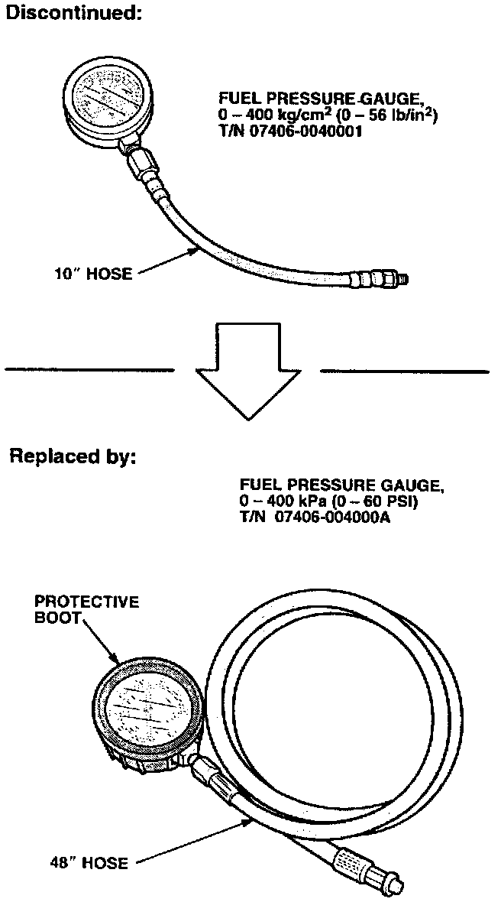
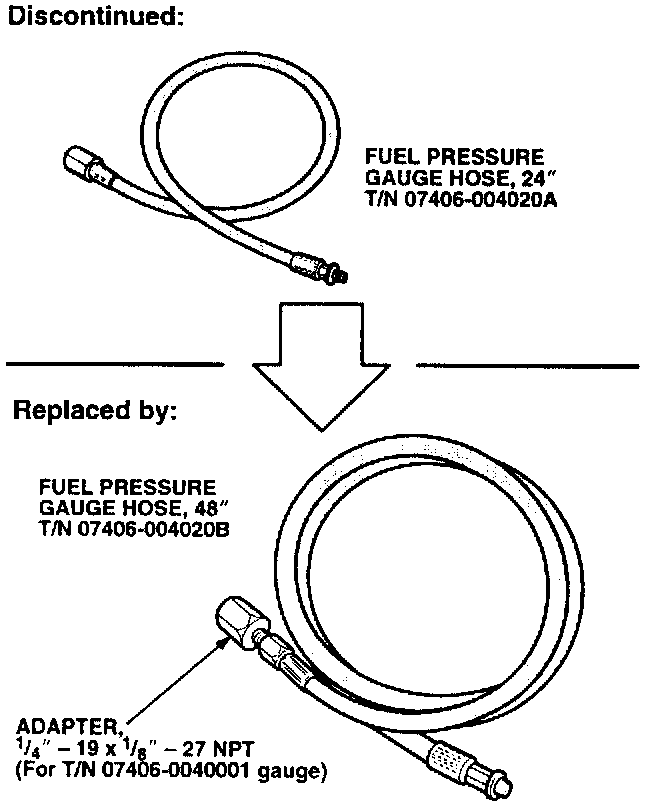

New Fuel Pressure Gauge and Replacement Parts
March 11, 1997BULLETIN NO.
97-010
YEAR
ALL
MODEL
ALL
VIN APPLICATION
ALL
New Fuel Pressure Gauge and Replacement Parts
New Gauge

The fuel pressure gauge with 10" hose (T/N 07406-0040001) has been discontinued. The gauge that replaces it (T/N 07406-004000A) has an easier-to-read face, a protective boot around the gauge housing, and a 48" hose.
Replacement Parts

The replacement hose for the old gauge (24", T/N 07406-004020A) has also been discontinued. If you need a replacement hose, order the new 48" hose (T/N 07406-004020B). The new hose comes with an adapter so you can use it with the old fuel pressure gauge (T/N 07406-0040001).
Before connecting the hose to the vehicle, make sure the aluminum washer on the end of the hose seals properly. If the aluminum washer doesn't seal, replace the washer.
Replacement washers come in a set of five (T/N 07406-0040300).